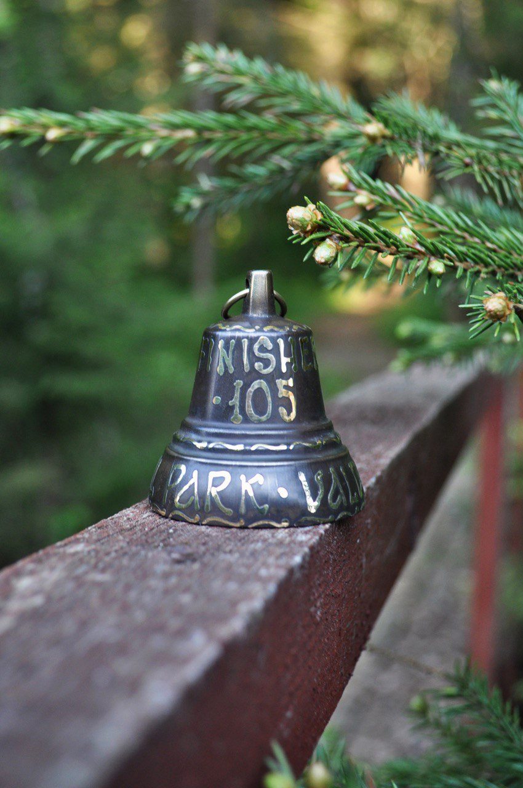
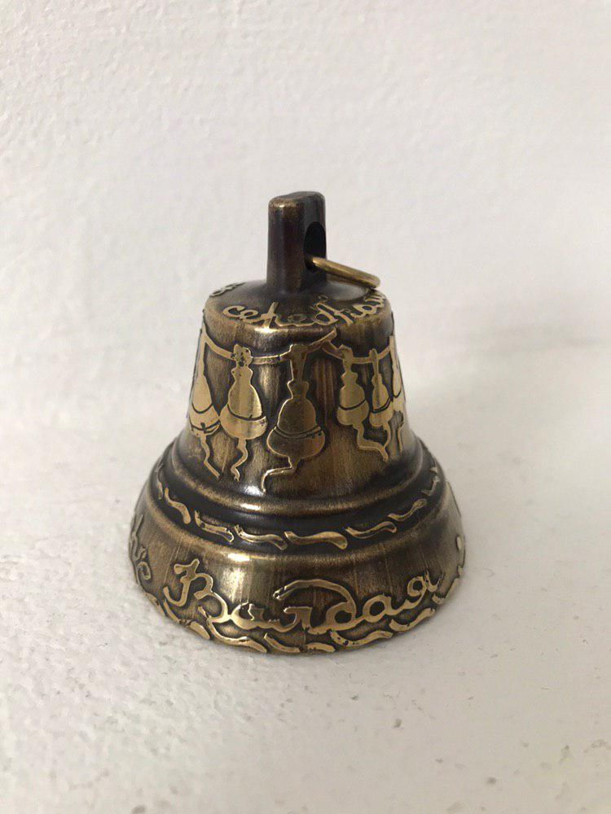
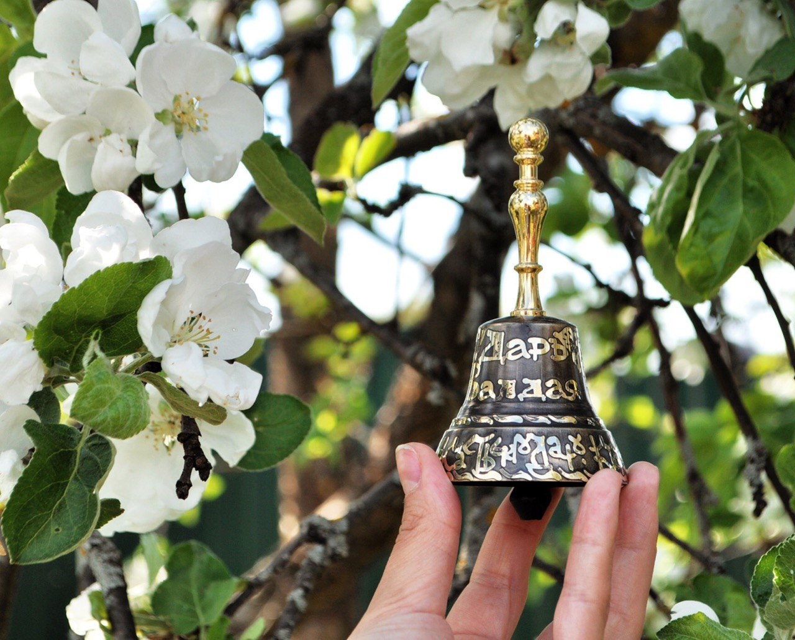
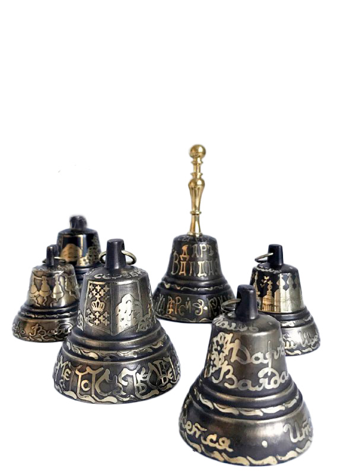

Ручная работа в деталях
У каждого колокольчика
У каждого колокольчика
своя история
Узоры, памятные надписи и знакомые места. Здесь собрали примеры работ мастерской — посмотрите, каким может быть ваш колокольчик.
9 работ

Дар Валдая
Колокольчики с ручками и орнаментом на камне

Именной подарок
Колокольчик с надписями «Дар Валдая» и «Маше от…»

Валдайский Иверский монастырь
Колокольчик с изображением монастыря на фоне его построек

Тверь
Колокольчик с изображением моста и надписью «Тверь»

Символы и надписи
Колокольчики с различными эмблемами и памятными надписями


На память о финише
Колокольчик с надписью «Finisher 105» среди еловых ветвей


Узор в деталях
Чернёный валдайский колокольчик с золотистым узором


Весенний Валдай
Колокольчик с золотистой ручкой на фоне цветущих ветвей


Разные формы — один характер
Группа валдайских колокольчиков разных форм с узорами